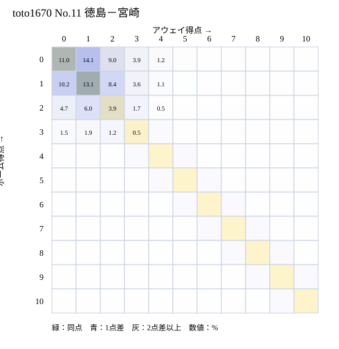
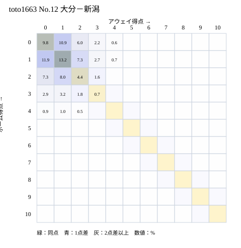
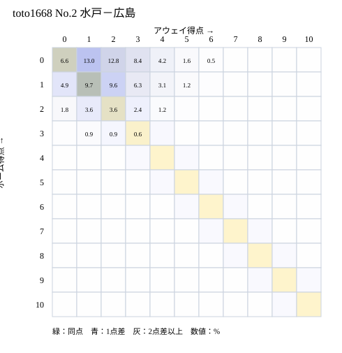
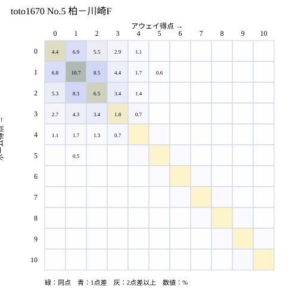
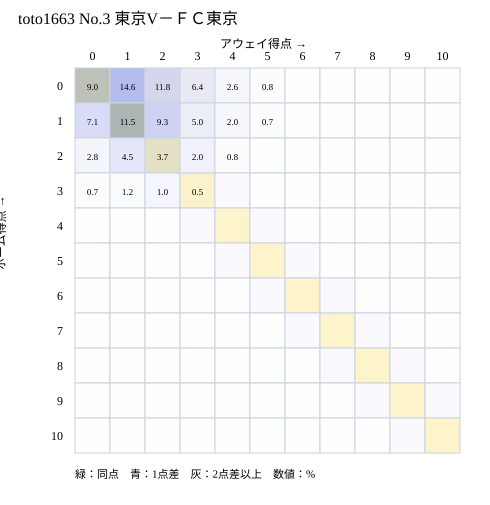
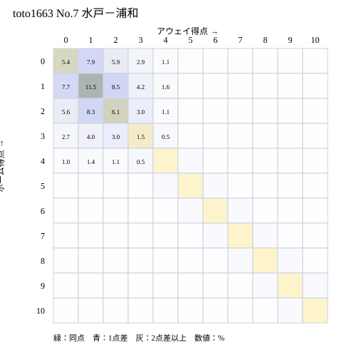

6開催78試合の試合前保存λから、既存 d_scoop.diagnose の11×11行列を再利用。各セルは独立Poisson(λH)×Poisson(λA)を0～10得点で切り、残存確率で正規化した条件付き質量。切り捨てた無条件質量の最大は0.00000858。保存0-0/1-1/2-2との最大誤差は9.71e-17。H/D/Aの最終値は疲労・天候等の不確実性mixによる一様混合後で、得点行列そのものではない。Dの最終と行列値の最大差は0.0315。
1点差スコアは1得点の増減で低側・高側の同点スコアに隣接する。2点差以上は最少2得点以上の変化が必要。ただし隣接は予測分布上の幾何学的関係で、試合中にDへ移る確率ではない。全1,560隣接行は勝敗セルごとに2つの同点セルと確率を示す。同じ同点セルを含む行を足し合わせず、同点質量は対角線から一度だけ集計した。
| home_goals | away_goals | side | victory_probability | adjacent_lower_draw | lower_draw_probability | adjacent_upper_draw | upper_draw_probability |
|---|---|---|---|---|---|---|---|
| 0 | 1 | A | 0.1411 | 0-0 | 0.1101 | 1-1 | 0.1305 |
| 1 | 0 | H | 0.1019 | 0-0 | 0.1101 | 1-1 | 0.1305 |
| 1 | 2 | A | 0.0836 | 1-1 | 0.1305 | 2-2 | 0.0387 |
| 2 | 1 | H | 0.0604 | 1-1 | 0.1305 | 2-2 | 0.0387 |
隣接する同点スコアの確率は勝敗スコアの確率と独立のセル質量。隣接確率を勝敗確率へ足してDの発生率と解釈しない。
| lambda_home | lambda_away | P_draw | P_0_0 | P_1_1 | P_draw_2plus | P_margin_1 | P_margin_2plus |
|---|---|---|---|---|---|---|---|
| 0.8000 | 0.8000 | 0.3533 | 0.2019 | 0.1292 | 0.0222 | 0.4380 | 0.2086 |
| 1.5000 | 1.5000 | 0.2430 | 0.0498 | 0.1120 | 0.0812 | 0.3937 | 0.3633 |
| 2.5000 | 2.5000 | 0.1836 | 0.0067 | 0.0421 | 0.1347 | 0.3280 | 0.4885 |
| 2.0000 | 0.8000 | 0.2047 | 0.0608 | 0.0973 | 0.0466 | 0.3481 | 0.4473 |
| round | match_no | home_team | away_team | lambda_home | lambda_away | final_P_D | raw_P_D | P_0_0 | P_1_1 | P_draw_2plus | P_margin_1 | P_margin_2plus |
|---|---|---|---|---|---|---|---|---|---|---|---|---|
| toto1670 | 11 | 徳島 | 宮崎 | 0.9253 | 1.2807 | 0.2969 | 0.2848 | 0.1101 | 0.1305 | 0.0442 | 0.4183 | 0.2968 |
| toto1663 | 12 | 大分 | 新潟 | 1.2147 | 1.1051 | 0.2817 | 0.2817 | 0.0983 | 0.1319 | 0.0515 | 0.4194 | 0.2989 |
| toto1668 | 2 | 水戸 | 広島 | 0.7466 | 1.9737 | 0.2366 | 0.2051 | 0.0659 | 0.0970 | 0.0422 | 0.3478 | 0.4471 |
| toto1670 | 5 | 柏 | 川崎F | 1.5478 | 1.5756 | 0.2614 | 0.2375 | 0.0440 | 0.1073 | 0.0861 | 0.3889 | 0.3737 |
| toto1668 | 2 | 水戸 | 広島 | 0.7466 | 1.9737 | 0.2366 | 0.2051 | 0.0659 | 0.0970 | 0.0422 | 0.3478 | 0.4471 |
| toto1663 | 3 | 東京V | ＦＣ東京 | 0.7881 | 1.6180 | 0.2474 | 0.2474 | 0.0902 | 0.1150 | 0.0423 | 0.3880 | 0.3646 |
| toto1663 | 7 | 水戸 | 浦和 | 1.4442 | 1.4816 | 0.2465 | 0.2465 | 0.0536 | 0.1147 | 0.0781 | 0.3965 | 0.3571 |
行列由来P(D)が近い2試合は差0.5ポイント以内から、0-0確率の差が最大のペアを選んだ。最終P(D)は参考表示にとどめる。不確実性mixは開催回ごと・試合ごとに異なり得るため、最終P(D)だけを揃えて元の得点構造を比較しない。得失点の突出試合に対する外れ値調整はλ算出前の別処理であり、今回の1660～1668保存予測にはその調整の監査列がない。これは構造比較であり、結果への適合やDの優劣ではない。






同点帯別質量（0-0、1-1、2-2以上）、H/A別1点差質量、H/A別2点差以上質量、同点への最少得点変化数、λ合計・差、1点差セルに隣接する同点セルの個別確率を残す。λ変動時にこれらがどう動くかを測ることで、隣接性を変化確率と混同せずに感応度を検討できる。Phase 3は実装していない。
78試合CSV ／ 全9,438行の得点行列CSV ／ 得点差別CSV ／ 隣接CSV ／ 理論比較CSV ／ 監査JSON